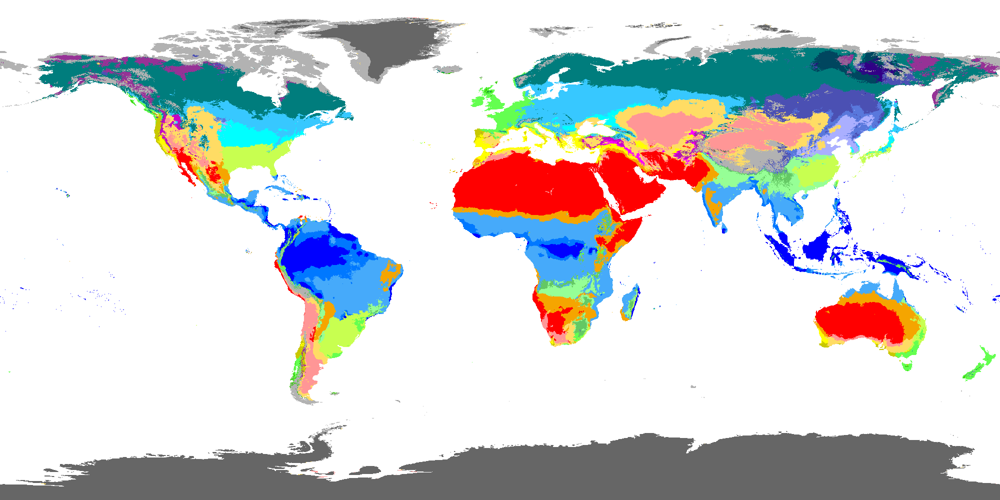
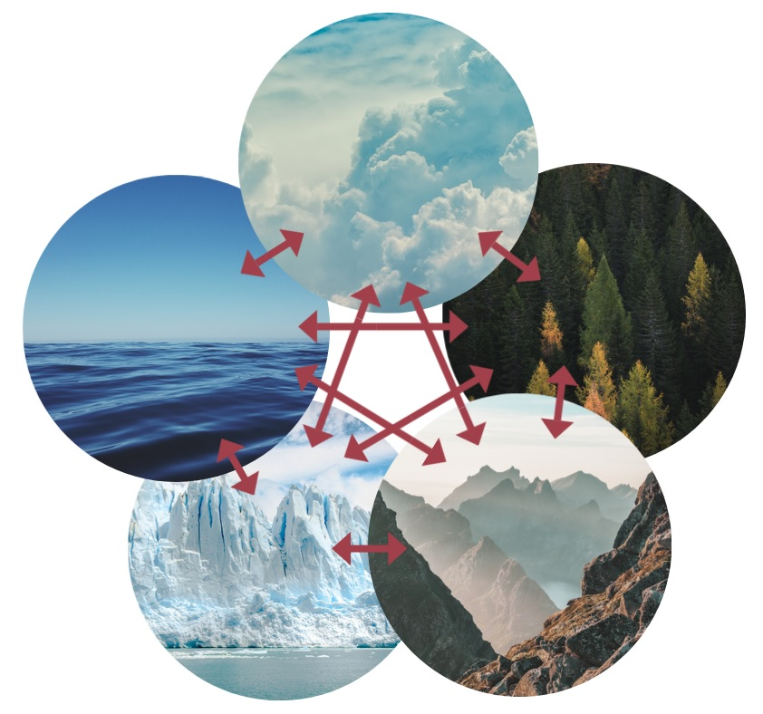
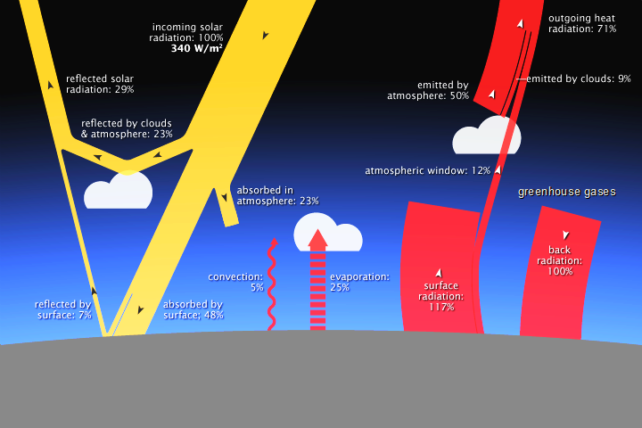
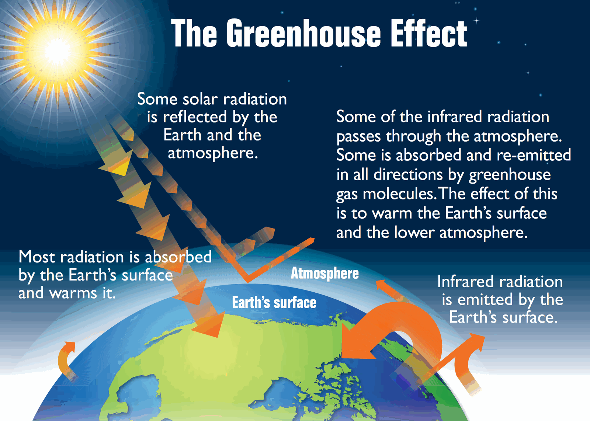
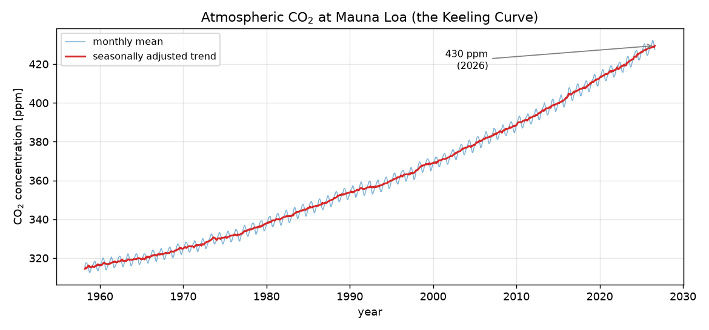
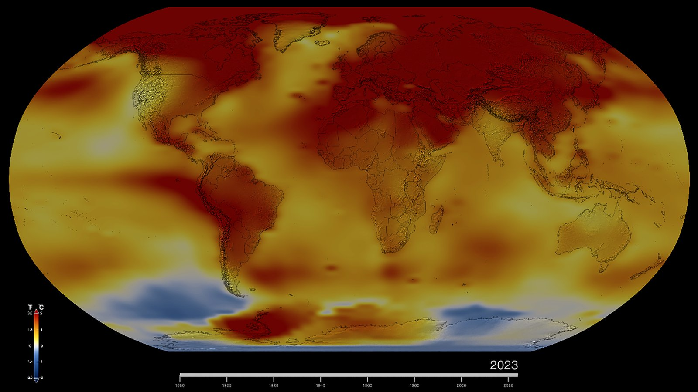
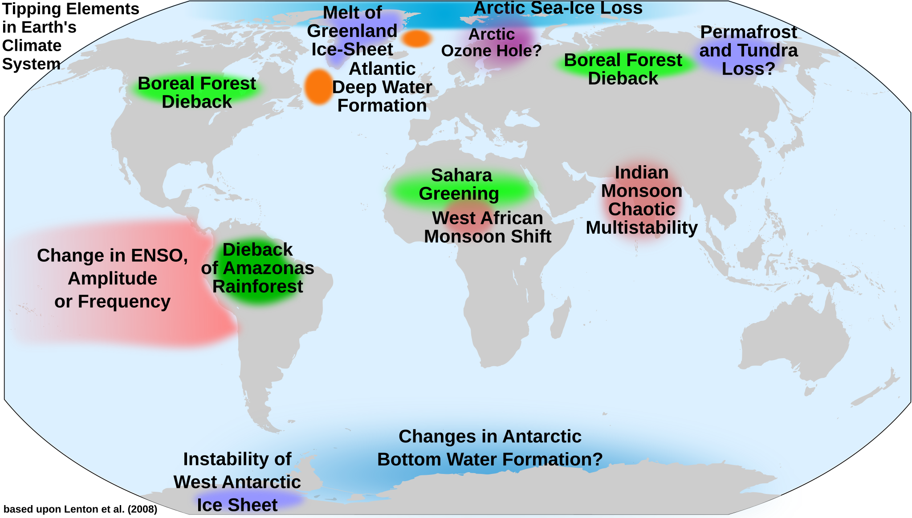

Lecture 2, Components of the climate system#
Before building any model, it helps to have a shared picture of what the climate system is made of, how its parts exchange energy and water, and why processes that span timescales from hours to millennia can nonetheless be studied with simple models. This lecture is descriptive; the quantitative treatment begins in Lecture 4 with a zero-dimensional energy balance model.
Weather and climate#
Weather is the state of the atmosphere at a particular place and time — temperature, humidity, precipitation, wind, cloud, and pressure — and it changes from hour to hour and day to day. Climate is the statistical description of weather over a long period, conventionally taken as 30 years: not just the average, but also the variability and the frequency of extremes. A useful shorthand is that climate is what you expect and weather is what you get.
The distinction matters for this course. Hydrological design — a spillway, a drought plan, an irrigation schedule — depends on climate statistics, while operations depend on weather. Climate change shifts the statistics, so design assumptions that were based on a stationary past have to be revisited.
Classifying climates#
Because climate varies systematically with latitude, altitude, distance from the ocean, and circulation, it can be classified into a manageable number of types. The Köppen–Geiger scheme groups climates into five broad classes — A tropical, B dry, C temperate, D continental, and E polar — each subdivided by seasonal temperature and precipitation into types such as monsoon, humid subtropical, semi-arid (steppe), subarctic, and tundra. India spans several of these, from arid western Rajasthan to the humid subtropical Indo-Gangetic plain to the alpine and polar climates of the high Himalaya.
{kind=link}

Fig. 2 Köppen–Geiger climate classification for 1980–2016. Note the dry belt through North Africa and Central Asia, the tropical band along the equator, and the continental interiors of Asia and North America. Figure: Beck, H. E. et al. (2018), Present and future Köppen-Geiger climate classification maps at 1-km resolution, Scientific Data 5, 180214, via Wikimedia Commons — licensed CC BY-SA 4.0.#
_no_borders.png){kind=link}
The five components#
{kind=link}

Fig. 3 The five components of the climate system and some of the exchanges between them. Figure: F. Nijsse, via Wikimedia Commons — licensed CC BY-SA 4.0.#
{kind=link}
The climate system is usually described as five interacting components:
Atmosphere — the fastest-responding component; carries heat and moisture, sets the radiative balance through greenhouse gases, clouds, and aerosols.
Hydrosphere — the oceans, lakes, and rivers; the ocean stores and transports enormous amounts of heat and carbon and has a long memory.
Cryosphere — snow, sea ice, glaciers, ice sheets, and permafrost; highly reflective, and a strong amplifier of change through the ice–albedo feedback.
Land surface (lithosphere) — topography, soils, and their moisture; controls the partitioning of rainfall into evaporation, runoff, and infiltration.
Biosphere — vegetation and soils on land, plankton in the ocean; modifies albedo, roughness, evapotranspiration, and the carbon cycle.
No component acts alone. Snow cover changes surface albedo and therefore air temperature; a warmer atmosphere holds more water vapour, which is itself a greenhouse gas; vegetation growth depends on temperature and soil moisture and in turn changes albedo and evapotranspiration. Lectures 5 and 6 make two of these couplings — temperature–ice and temperature–vegetation–water — quantitative.
Earth as a system of systems#
Treating the climate as a set of coupled subsystems, each with its own governing equations and exchanging fluxes of energy, water, and carbon with the others, is the conceptual basis of every climate model, from the zero-dimensional model of Lecture 4 to full Earth system models.
Energy balance in one paragraph#
Averaged over the globe and over a year, about 340 W m⁻² of solar radiation arrives at the top of the atmosphere. A fraction is reflected straight back to space; that fraction is the albedo. Bright surfaces — fresh snow, thick cloud — have a high albedo (0.5–0.9); the open ocean has a low albedo (about 0.06). Earth’s overall albedo is roughly 0.3. The remaining absorbed sunlight warms the surface and atmosphere, which radiate in the infrared; in the long-term mean, outgoing infrared radiation balances absorbed sunlight. Lecture 4 turns exactly this sentence into an equation.
{kind=link}

Fig. 4 Global-mean energy budget: incoming solar, reflected solar, and outgoing infrared fluxes in W m⁻². The large downward and upward infrared arrows at the surface are the greenhouse effect. Figure: Robert Simmon, NASA Earth Observatory, adapted from Trenberth et al. (2009), via Wikimedia Commons — public domain.#
.png){kind=link}
The greenhouse effect#
Greenhouse gases — water vapour, carbon dioxide, methane, nitrous oxide — are largely transparent to sunlight but absorb and re-emit infrared radiation. This keeps the lower atmosphere and surface roughly 33 K warmer than they would be otherwise, which is what makes the planet habitable. The effect is natural; what is new is the enhanced greenhouse effect from human emissions.
{kind=link}

Fig. 5 The greenhouse effect: solar radiation is mostly absorbed at the surface, which re-emits infrared radiation; greenhouse gases absorb part of that infrared and re-radiate it in all directions, including back downward. Figure: U.S. EPA, Climate Change Indicators in the United States (2nd ed., 2012), via Wikimedia Commons — public domain (work of the U.S. federal government).#
.png){kind=link}
What is climate change?#
The IPCC defines climate change as a change in the state of the climate that can be identified by changes in the mean and/or the variability of its properties, and that persists for an extended period, typically decades or longer. The change can arise from natural causes or from anthropogenic causes. Attribution studies separate these contributions; at the global scale the observed warming since the mid-20th century is overwhelmingly anthropogenic, while at regional scales natural variability can be comparable to or larger than the forced signal.
Causes: radiative forcing#
The common currency for comparing causes of climate change is radiative forcing: the change, in W m⁻², that an agent imposes on Earth’s energy balance at the top of the atmosphere before the climate has had time to respond. A positive forcing warms the planet, a negative forcing cools it, and forcings from different agents can be added.
Natural forcings.
Solar variability — the Sun’s output varies by about 0.1% over the 11-year sunspot cycle, with larger changes on centennial scales. Its net forcing over the industrial era is small (of order +0.01 W m⁻²).
Volcanic eruptions — large explosive eruptions inject sulphate aerosol into the stratosphere, reflecting sunlight and cooling the surface by a few tenths of a degree for two to three years.
Orbital (Milankovitch) variations — slow changes in the shape of Earth’s orbit and the tilt and precession of its axis redistribute sunlight by latitude and season and pace the ice ages, but act on tens of thousands of years and are negligible over a century.
Anthropogenic forcings.
Well-mixed greenhouse gases — carbon dioxide is the largest single contributor, its concentration having risen from about 280 ppm before industrialisation to over 420 ppm today, chiefly from fossil-fuel combustion and deforestation. Methane, nitrous oxide, and halocarbons add substantially more.
Aerosols — sulphate and other particles from combustion scatter sunlight and seed brighter clouds, producing a negative forcing that has masked part of the greenhouse warming; this offset is shrinking as air-quality controls reduce emissions.
Land-use change — clearing forests for cropland generally raises surface albedo (a small negative forcing) while also releasing carbon.
The net anthropogenic forcing since 1750 is roughly +2.7 W m⁻² (IPCC AR6), almost entirely from greenhouse gases partly offset by aerosols.
{kind=link}

Fig. 6 The Keeling Curve: monthly-mean atmospheric CO₂ at Mauna Loa, Hawai‘i. The saw-tooth is the seasonal breathing of Northern-Hemisphere vegetation; the relentless rise is the anthropogenic signal. Data: NOAA Global Monitoring Laboratory / Scripps Institution of Oceanography (public domain); figure generated for this course.#
Observed impacts#
Surface warming of about 1.1–1.2 °C since the late 19th century, faster over land than ocean and fastest in the Arctic (“polar amplification”).
Ocean heat uptake — more than 90% of the excess energy has gone into the ocean, raising its heat content and stratifying the upper layers.
Sea-level rise of about 0.2 m since 1900 and accelerating, from thermal expansion of sea water plus melting glaciers and ice sheets.
Cryosphere loss — shrinking Arctic sea ice, retreating mountain glaciers, and mass loss from Greenland and Antarctica.
Changing extremes — heatwaves are more frequent and intense almost everywhere, heavy-precipitation events have intensified, and the character of droughts has shifted in many regions.
{kind=link}

Fig. 7 Surface temperature anomaly for a recent year relative to the 1951–1980 average. Nearly the whole planet is warmer than the mid-20th-century baseline, with the largest anomalies over the Arctic. Figure: NASA Scientific Visualization Studio / GISS — public domain.#
Climate feedbacks#
A feedback is a process set in motion by a change in temperature that drives a further change in temperature. If it amplifies the original change it is positive; if it opposes it, negative. Feedbacks do not cause climate change on their own — a forcing does that — but they determine how much warming a given forcing produces.
Planck feedback (strongly negative) — a warmer surface radiates more infrared to space, roughly as \(T^4\). This is the fundamental stabiliser, and the reference against which the others are measured.
Water-vapour feedback (positive, the largest amplifier) — warmer air holds more water vapour (Clausius–Clapeyron again), and water vapour is itself a greenhouse gas. On its own this roughly doubles the warming from CO₂ alone.
Lapse-rate feedback (negative) — in the tropics the upper troposphere warms faster than the surface, which increases outgoing radiation and partly cancels the water-vapour feedback.
Surface-albedo (ice–albedo) feedback (positive) — melting snow and ice expose darker ocean and land, which absorb more sunlight and warm further. This feedback drives polar amplification, and Lecture 5 makes it quantitative.
Cloud feedback (positive on balance, most uncertain) — warming changes the height, coverage, and brightness of clouds; the net effect is a modest amplification but it is the single largest source of spread among climate models.
Carbon-cycle feedbacks (mostly positive) — warming reduces the efficiency with which the ocean and land take up CO₂, and thawing permafrost releases CO₂ and methane, leaving more of each tonne of emissions in the atmosphere.
Adding the feedbacks together, the climate system remains net-stabilising — the sum is negative, so temperature does not run away — but far less strongly than the Planck feedback alone. The practical measure of the result is the equilibrium climate sensitivity, the eventual global warming for a doubling of CO₂, assessed by IPCC AR6 as about 3 °C (likely range 2.5–4 °C). Lectures 5 and 6 build small models in which the ice–albedo and vegetation feedbacks can be switched on and their effect seen directly.
Tipping points in the climate system#
Most of the climate’s response to forcing is gradual and reversible: push a little harder and you get a little more warming; ease off and it relaxes back. A tipping point is a threshold beyond which some part of the system reorganises into a qualitatively different state — often abruptly, and often with hysteresis, meaning that simply reversing the forcing does not reverse the change.
The Snowball Earth problem in Lecture 5 is a clean example: for the same solar input the planet has two stable climates, one ice-free and one frozen over, separated by an unstable threshold. Once the ice line pushes past a critical latitude, the ice–albedo feedback runs away and the planet flips state; getting back out requires a much larger change in forcing than the one that triggered the collapse.
The real climate contains several such tipping elements:
{kind=link}

Fig. 8 Potential tipping elements in the climate system, after Lenton et al. (2008). Figure: “CodeOne / DeWikiMan”, via Wikimedia Commons — licensed CC BY-SA 4.0.#
{kind=link}
Ice sheets — Greenland and West Antarctica hold enough water for several metres of sea-level rise, and their loss above a temperature threshold is effectively irreversible on human timescales.
Atlantic Meridional Overturning Circulation (AMOC) — the ocean circulation that carries heat northward in the Atlantic; a slowdown or collapse would shift rainfall belts, including the West African and South Asian monsoons.
Amazon rainforest — drying and deforestation could push it past a threshold into savanna, releasing carbon and reducing continental moisture recycling.
Permafrost — thaw releases CO₂ and methane, a carbon-cycle feedback that can itself behave like a tipping process.
Monsoon systems and tropical coral reefs are also discussed as candidate tipping elements.
For water resources the concern is that a tipping event would move a region’s hydroclimate outside anything in the historical record, quickly and permanently. A useful early-warning idea, which connects directly to the dynamical-systems view in Lectures 5 and 6, is critical slowing down: as a system approaches a tipping threshold it recovers more and more sluggishly from small perturbations, so rising variance and autocorrelation in observations can signal that a threshold is near.
Timescales, scale separation, and averaging#
Climate processes act on enormously different timescales:
Process |
Characteristic time |
|---|---|
Convective cloud |
hours |
Weather systems |
days |
Seasonal cycle, El Niño |
months to a few years |
Upper-ocean adjustment |
years to decades |
Deep-ocean circulation, ice sheets |
centuries to millennia |
Tectonics, orbital variations |
10⁴–10⁸ years |
It is worth naming three different “times” that often get conflated: a period is the interval between regularly recurring events (the seasons); a response time is how long a system takes to adjust to a new forcing (decades for the upper ocean to reach a new temperature); a lifetime is how long an individual phenomenon lasts (a convective cloud).
This spread of timescales is what makes simple models useful. Because fast and slow processes are well separated, a model aimed at one timescale can treat much faster processes as instantaneous noise and much slower ones as fixed boundary conditions. Averaging in time or space then removes the fast fluctuations and exposes the slower behaviour of interest — the same reasoning that lets a zero-dimensional model say something meaningful about global temperature without resolving a single weather system. The models in the following lectures are built on exactly this idea.
Figures and sources#
The figures above are reproduced from openly licensed sources, each attributed in its caption:
Figure |
Source |
Licence |
|---|---|---|
Köppen–Geiger map |
Beck et al. (2018), Scientific Data 5, 180214 |
CC BY-SA 4.0 |
Five components |
F. Nijsse (Wikimedia Commons) |
CC BY-SA 4.0 |
Energy budget |
R. Simmon, NASA Earth Observatory (after Trenberth et al. 2009) |
Public domain |
Greenhouse effect |
U.S. EPA, Climate Change Indicators (2012) |
Public domain |
Keeling Curve |
Data: NOAA GML / Scripps; figure made for this course |
Public domain data |
Temperature anomaly map |
NASA Scientific Visualization Studio / GISS |
Public domain |
Tipping elements |
CodeOne / DeWikiMan (Wikimedia), after Lenton et al. (2008) |
CC BY-SA 4.0 |
For further reading and additional figures:
IPCC AR6 Working Group I — the technical basis for climate change and its figure archive: https://www.ipcc.ch/report/ar6/wg1/
UCAR Center for Science Education — climate system, energy budget, and albedo explainers: https://scied.ucar.edu/learning-zone/how-climate-works
NASA — My NASA Data — Earth as a system, climate-system components: https://mynasadata.larc.nasa.gov/
Beck et al. (2018) — Present and future Köppen-Geiger climate classification maps at 1-km resolution: https://www.nature.com/articles/sdata2018214
Brian Rose — The Climate Laboratory, “Models, budgets, and fun” and the energy-balance chapters: https://brian-rose.github.io/ClimateLaboratoryBook/courseware/models-budgets-fun.html